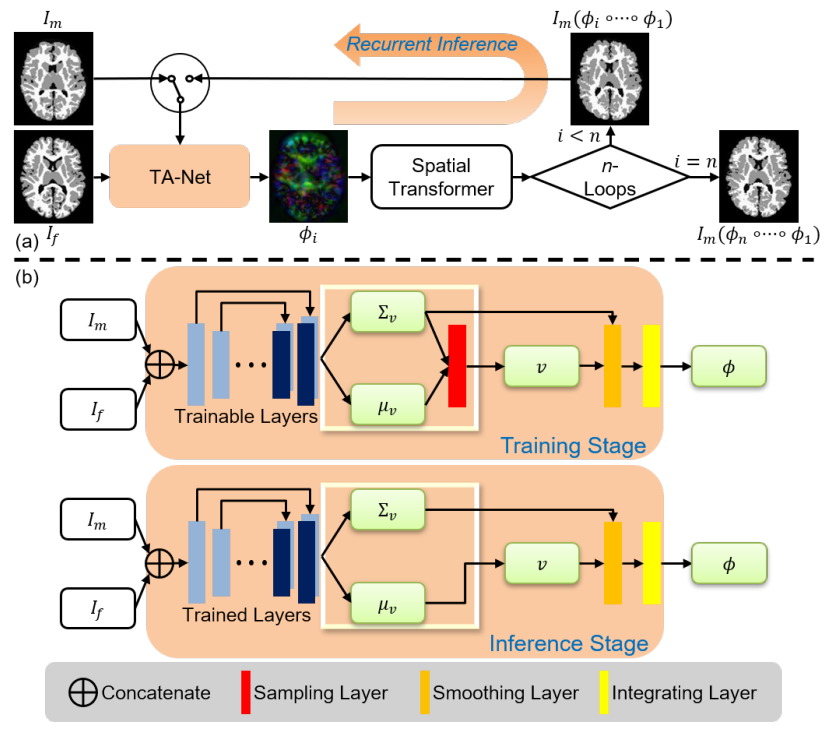
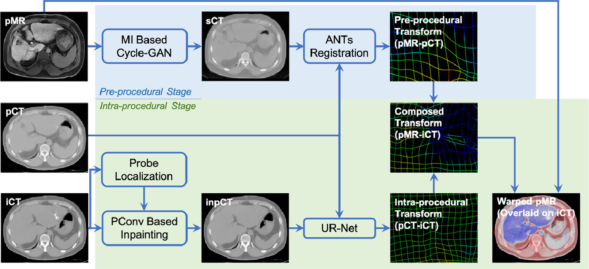
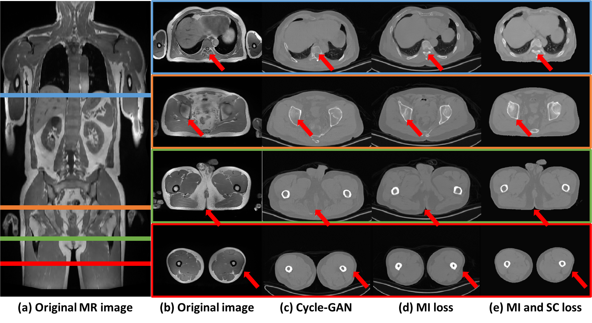
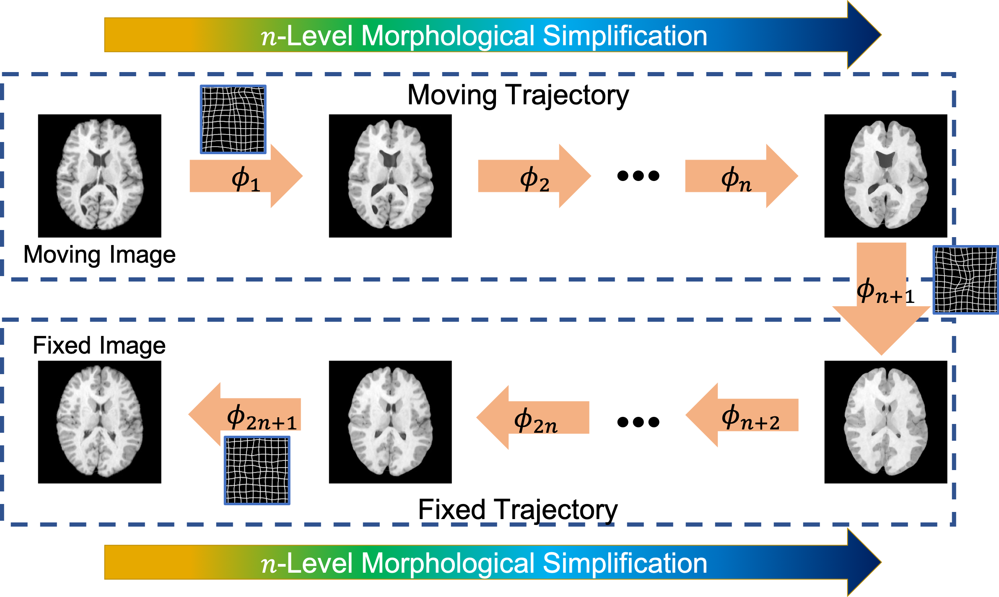

My research interests lie in Medical Image Analysis, Computer Vision, and Image-Guided Surgery. Especially, I am
focusing on image registration and synthesis using various learning algorithms (CNN, GAN, VAE etc.) to advance the healthcare experience in real world.
|

|
Recurrent Tissue-Aware Network for Deformable Registration of Infant Brain MR Images
Dongming Wei, Sahar Ahmad, Yuyu Guo, Liyun Chen, Yunzhi Huang, Lei Ma, Zhengwang Wu, Gang Li, Li Wang, Weili Lin, Pew-Thian Yap, Dinggang Shen, Qian Wang
IEEE Transactions on Medical Imaging (TMI), 2021.
[paper]
[code]
|
|

|
SLIR: Synthesis, Localization, Inpainting, and Registration for Image-Guided Thermal Ablation of Liver Tumors
Dongming Wei, Sahar Ahmad, Jiayu Huo, Pu Huang, Pew-Thian Yap, Zhong Xue, Jianqi Sun, Wentao Li, Dinggang Shen, Qian Wang
Medical Image Analysis (MedIA), 2020.
[paper]
Synthesis and inpainting-based MR-CT registration for image-guided thermal ablation of liver tumors
Dongming Wei, Sahar Ahmad, Jiayu Huo, Wen Peng, Yunhao Ge, Zhong Xue, Pew-Thian Yap, Wentao Li, Dinggang Shen, Qian Wang
International Conference on Medical Image Computing and Computer-Assisted Intervention (MICCAI), 2019.
[paper]
|
|

|
Unpaired MR to CT synthesis with explicit structural constrained adversarial learning
Yunhao Ge*, Dongming Wei*, Zhong Xue, Yiqiang Zhan, Xiang Zhou, Qian Wang and Shu Liao (*=equal contribution)
IEEE International Symposium on Biomedical Imaging (ISBI), 2019.
[paper]
[code]
Systems and methods for image processing
Shu Liao, Yunhao Ge, Dongming Wei
US Patent App. 16/729,303
[patent]
|
|

|
Deep morphological simplification network (MS-Net) for guided registration of brain magnetic resonance images
Dongming Wei, Lichi Zhang, Zhengwang Wu, Xiaohuan Cao, Gang Li, Dinggang Shen, Qian Wang
Pattern Recognition (PR), 2020.
[paper]
[code]
Morphological Simplification of Brain MR Images by Deep Learning for Facilitating Deformable Registration
Dongming Wei, Sahar Ahmad, Zhengwang Wu, Xiaohuan Cao, Xuhua Ren, Gang Li, Dinggang Shen, Qian Wang
International Workshop on Machine Learning in Medical Imaging (MLMI, Oral), 2019.
[paper]
|